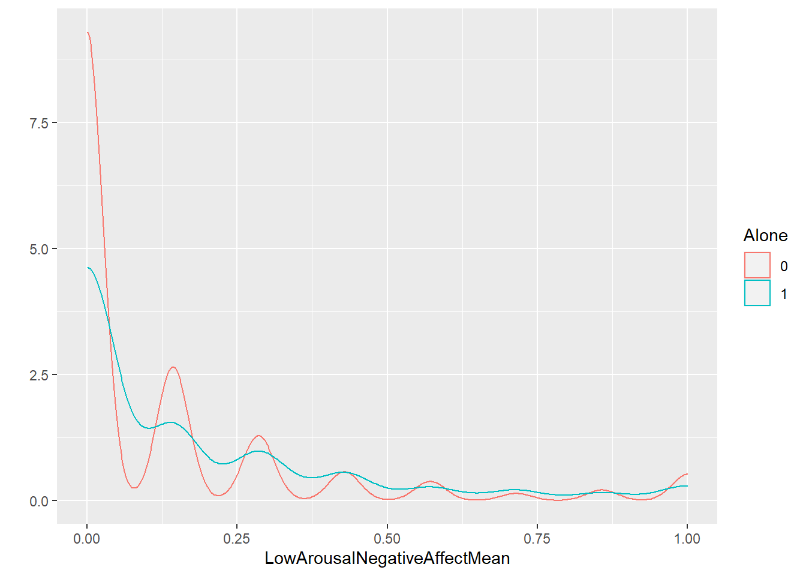
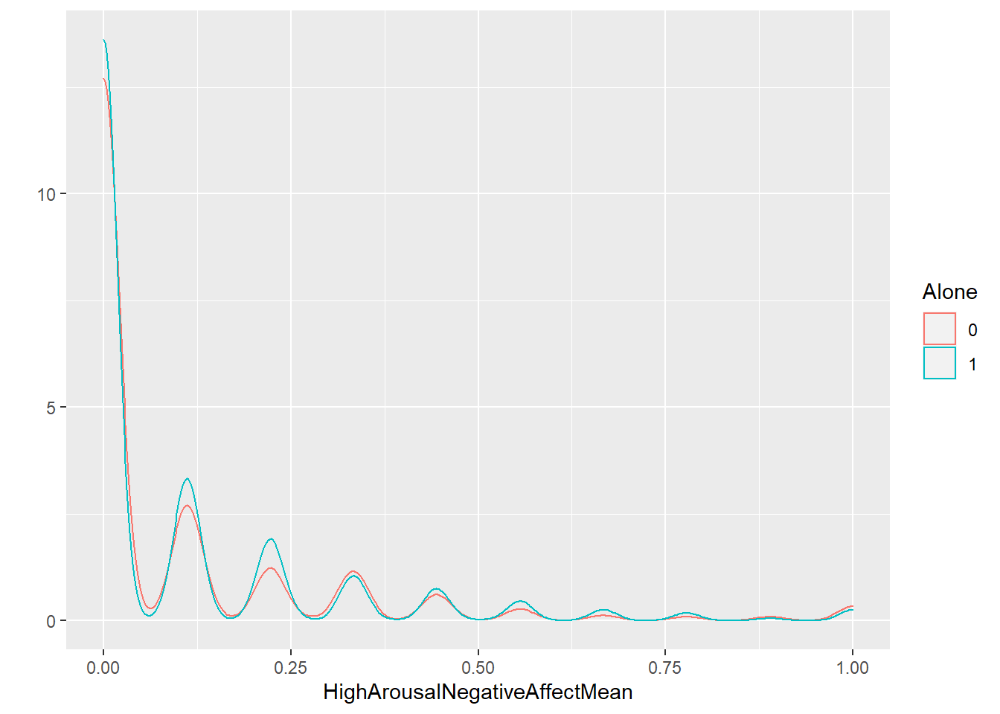
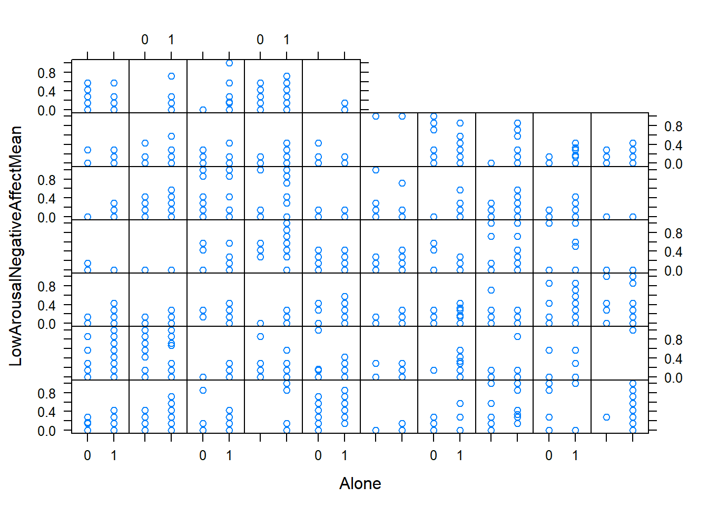
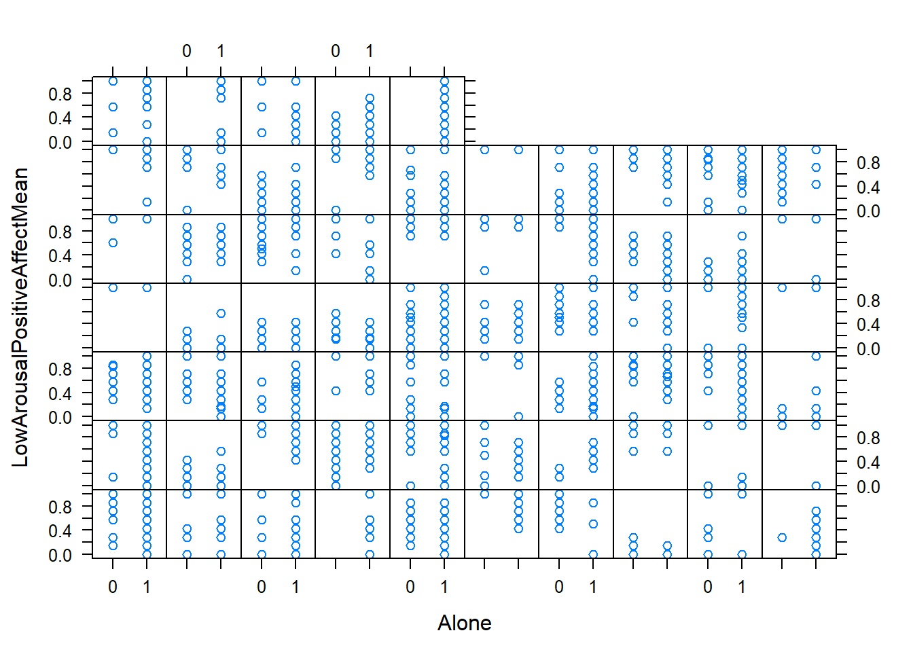
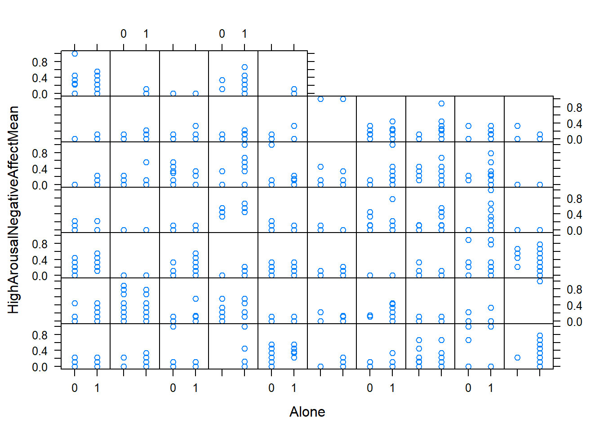
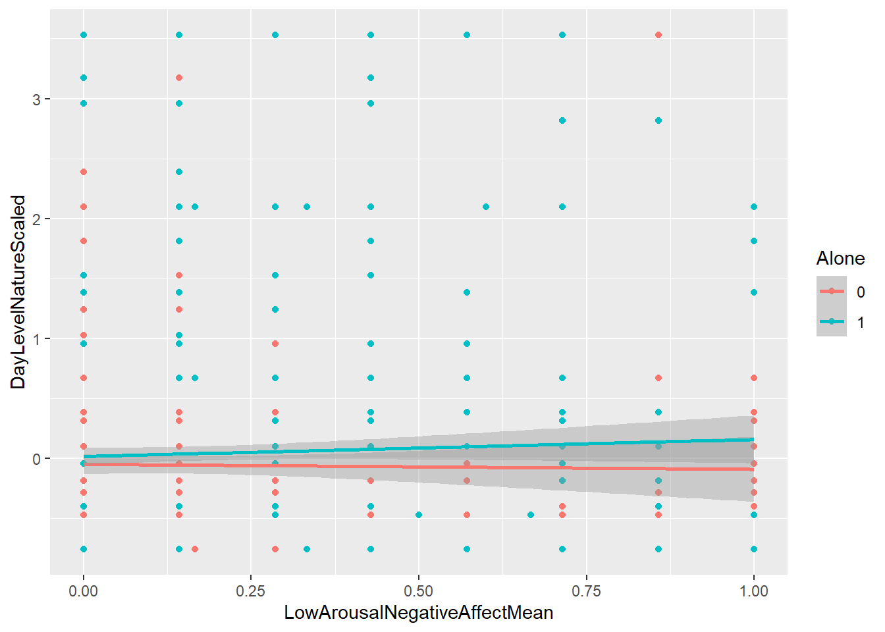
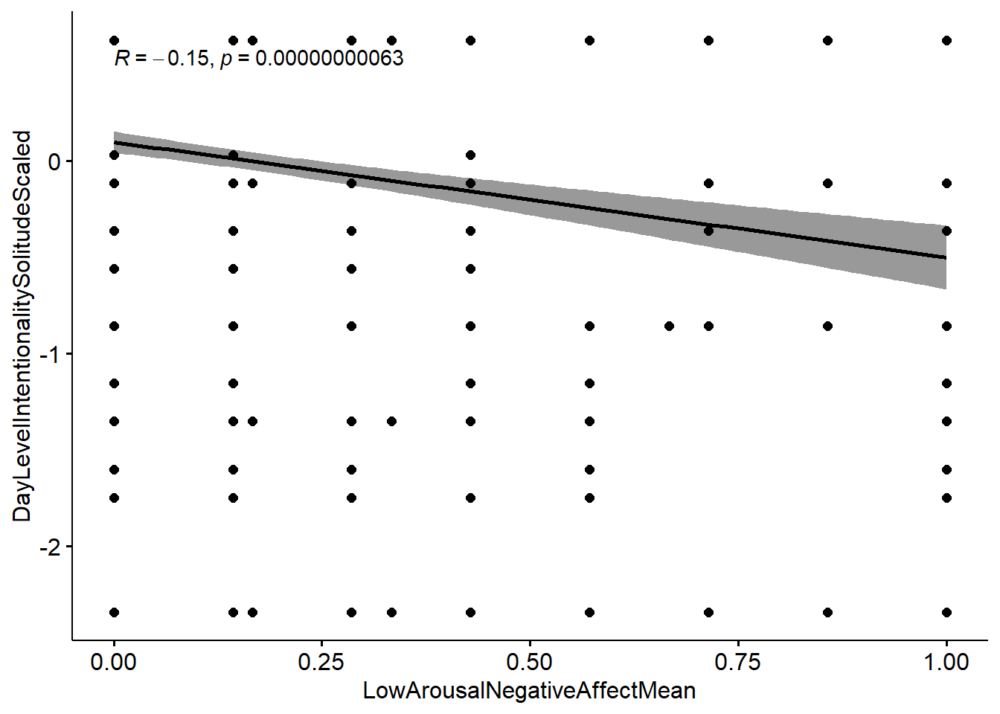
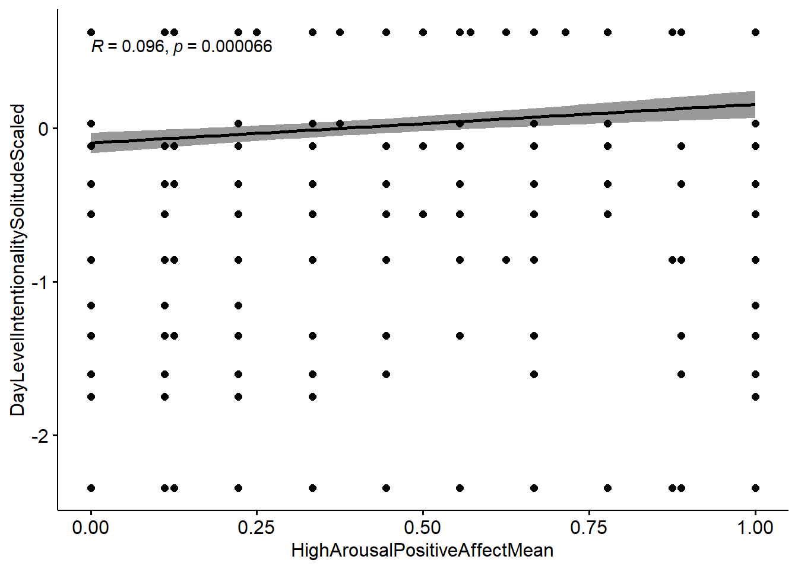
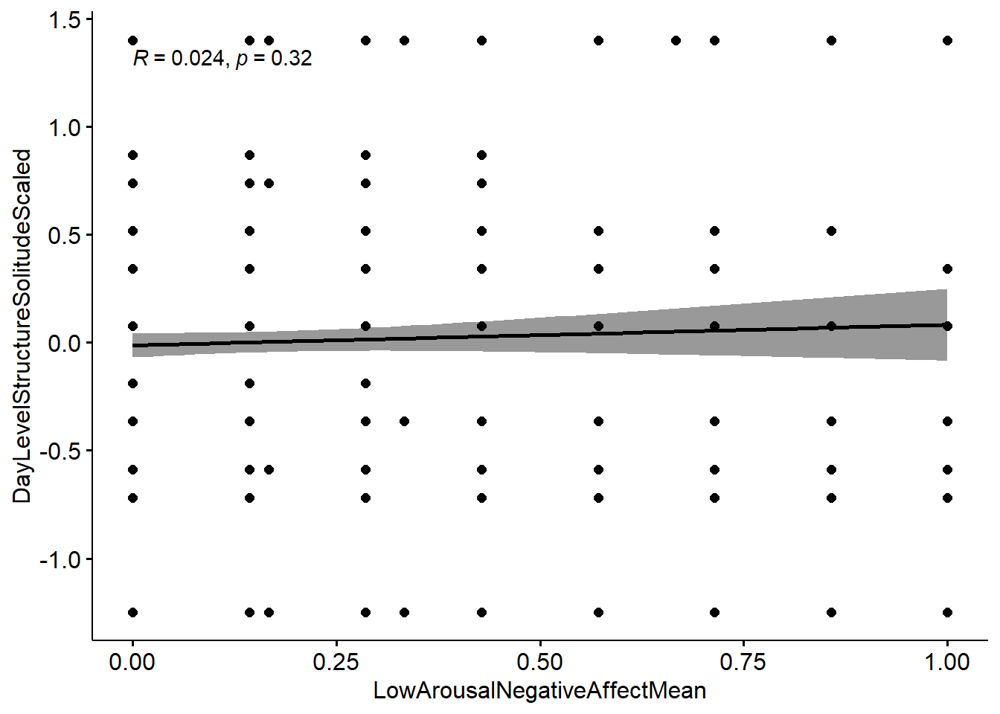

Chapter 4 Understanding the Data
In the following section we will try to understand the data. To that end, we first create multiple visualisations of all important variables. We hereby restrict ourselves to visualising the data the main analyses will be based on. As stated in the pre-registration, we conduct our main analyses based on all participants who completed at least 50% of the daily surveys.
4.1 Preparations
Now, we can create a new dataframe containing only participants who completed more than 50% of all surveys (17.5, rounded up = 18)
Next, we scale all our continuous independent variables.
df_analysis18$StructureForSolitudeIndividualScaled <- scale(df_analysis18$StructureForSolitudeIndividual)
df_analysis18$DayLevelIntentionalitySolitudeScaled <- scale(df_analysis18$DayLevelIntentionalitySolitude)
df_analysis18$DayLevelNatureScaled <- scale(df_analysis18$DayLevelNature)
df_analysis18$DayLevelStructureSolitudeScaled <- scale(df_analysis18$DayLevelStructureSolitude)4.2 Variable Overview
Below you can find an overview and a summary over all central variables used in the analyses. More detailled descriptions of the variables can also be found in the pre-registration (https://osf.io/efn3h/). Variables with dayin the name always code the average score of all measurements taken on the same day.
4.2.1 ESM Measurements
Alone: Codes whether participant where alone or in a social situation at the time they completed the survey. 0 indicates that they were not alone, 1 indicates that they were alone.
## 0 1 NA's
## 656 240 987DayLevelStructureSolitude: Codes whether participants had any goal they wanted to direct their attention to while being alone. A higher score indicates more structure. DayLevelStructureSolitudeScaled is the scaled version of this variable.
## Min. 1st Qu. Median Mean 3rd Qu. Max. NA's
## 0.0000 0.0000 0.0000 0.3958 1.0000 1.0000 1207DayLevelIntentionalitySolitude: Codes whether participants were purposefully alone or whether they wished they were interacting with someone. DayLevelIntentionalitySolitudeScaled is the scaled version of this variable.
## Min. 1st Qu. Median Mean 3rd Qu. Max. NA's
## 0.0000 0.5000 1.0000 0.7742 1.0000 1.0000 1246DayLevelNature: Codes whether participants were in a natural or a built environment. A higher score indicates a more natural environment. DayLevelNatureScaledis the scaled version of this variable.
## Min. 1st Qu. Median Mean 3rd Qu. Max.
## 1.000 1.000 1.200 1.531 2.000 4.000SubjDay: This variable codes the combination of subject and day following https://psyarxiv.com/xf2pw/
LowArousalNegativeAffectMean: Mean score of 7 affect items. Higher scores indicate higher mean levels of this affect type. The items used to create the mean scores of all affect variables can be viewed on https://osf.io/wuqy9/.
## Min. 1st Qu. Median Mean 3rd Qu. Max. NA's
## 0.0000 0.0000 0.0000 0.1583 0.2857 1.0000 52HighArousalNegativeAffectMean: Mean score of 9 affect items. Higher scores indicate higher mean levels of this affect type.
## Min. 1st Qu. Median Mean 3rd Qu. Max. NA's
## 0.0000 0.0000 0.0000 0.1064 0.1111 1.0000 52LowArousalPositiveAffectMean: Means score of 7 affect items. Higher scores indicate higher mean levels of this affect type.
## Min. 1st Qu. Median Mean 3rd Qu. Max. NA's
## 0.0000 0.2857 0.7143 0.5954 1.0000 1.0000 25HighArousalPositiveAffectMean: Mean score of 9 affect items. Higher scores indicate higher mean levels of this affect type.
## Min. 1st Qu. Median Mean 3rd Qu. Max. NA's
## 0.0000 0.0000 0.2222 0.3926 0.7778 1.0000 404.2.2 Person-level Measurements
StructureForSolitudeIndividual: Summaryscore of 5-item questionnaire about structure for solitude. One measurement per individual. StructureForSolitudeIndividualScaled is the scaled version of this variable.
## Min. 1st Qu. Median Mean 3rd Qu. Max.
## 1.20 2.60 3.20 3.22 4.00 5.004.3 Visualisations
First, we begin to look at the data by looking at the densityplots for each dependent variable by level of Alone.


Next, we visualise some individual differences among our participants using xyplots.
#visualise individual differences among participants
lattice::xyplot(LowArousalNegativeAffectMean ~ Alone | Participant.ID, strip = FALSE, data = df_analysis18, na.rm = TRUE)



Afterwards, we check the correlations of each dependent variable with the moderator day-level exposure to nature.
#Correlation of Nature with Each Outcome Variable for each level of alone
ggplot(data = df_analysis18, aes(LowArousalNegativeAffectMean, DayLevelNatureScaled, colour = Alone, na.rm = TRUE)) + geom_point() + geom_smooth(method = "lm")## `geom_smooth()` using formula 'y ~ x'## Warning: Removed 52 rows containing non-finite values
## (stat_smooth).## Warning: Removed 52 rows containing missing values
## (geom_point).
## `geom_smooth()` using formula 'y ~ x'## Warning: Removed 25 rows containing non-finite values
## (stat_smooth).## Warning: Removed 25 rows containing missing values
## (geom_point).## `geom_smooth()` using formula 'y ~ x'## Warning: Removed 52 rows containing non-finite values
## (stat_smooth).## Warning: Removed 52 rows containing missing values
## (geom_point).## `geom_smooth()` using formula 'y ~ x'## Warning: Removed 40 rows containing non-finite values
## (stat_smooth).## Warning: Removed 40 rows containing missing values
## (geom_point).And now for day-level intentionality.
#Correlation of DayLevelIntentionality with Outcome (we only calculate these for alone anyway, so the above graphs would not make sense)
ggscatter(df_analysis18, x = "LowArousalNegativeAffectMean", y = "DayLevelIntentionalitySolitudeScaled",
add = "reg.line", conf.int = TRUE,
cor.coef = TRUE, cor.method = "pearson",
xlab = "LowArousalNegativeAffectMean", ylab = "DayLevelIntentionalitySolitudeScaled", na.rm = TRUE)## `geom_smooth()` using formula 'y ~ x'## Warning: Removed 1281 rows containing non-finite values
## (stat_smooth).## Warning: Removed 1281 rows containing non-finite values
## (stat_cor).
ggscatter(df_analysis18, x = "LowArousalPositiveAffectMean", y = "DayLevelIntentionalitySolitudeScaled",
add = "reg.line", conf.int = TRUE,
cor.coef = TRUE, cor.method = "pearson",
xlab = "LowArousalPositiveAffectMean", ylab = "DayLevelIntentionalitySolitudeScaled", na.rm = TRUE)## `geom_smooth()` using formula 'y ~ x'## Warning: Removed 1265 rows containing non-finite values
## (stat_smooth).## Warning: Removed 1265 rows containing non-finite values
## (stat_cor).
ggscatter(df_analysis18, x = "HighArousalNegativeAffectMean", y = "DayLevelIntentionalitySolitudeScaled",
add = "reg.line", conf.int = TRUE,
cor.coef = TRUE, cor.method = "pearson",
xlab = "HighArousalNegativeAffectMean", ylab = "DayLevelIntentionalitySolitudeScaled", na.rm = TRUE)## `geom_smooth()` using formula 'y ~ x'## Warning: Removed 1280 rows containing non-finite values
## (stat_smooth).## Warning: Removed 1280 rows containing non-finite values
## (stat_cor).ggscatter(df_analysis18, x = "HighArousalPositiveAffectMean", y = "DayLevelIntentionalitySolitudeScaled",
add = "reg.line", conf.int = TRUE,
cor.coef = TRUE, cor.method = "pearson",
xlab = "HighArousalPositiveAffectMean", ylab = "DayLevelIntentionalitySolitudeScaled", na.rm = TRUE)## `geom_smooth()` using formula 'y ~ x'## Warning: Removed 1270 rows containing non-finite values
## (stat_smooth).## Warning: Removed 1270 rows containing non-finite values
## (stat_cor).
And for day-level structure.
#Correlation of DayLevelStructureSolitude with Outcome
ggscatter(df_analysis18, x = "LowArousalNegativeAffectMean", y = "DayLevelStructureSolitudeScaled",
add = "reg.line", conf.int = TRUE,
cor.coef = TRUE, cor.method = "pearson",
xlab = "LowArousalNegativeAffectMean", ylab = "DayLevelStructureSolitudeScaled", na.rm = TRUE)## `geom_smooth()` using formula 'y ~ x'## Warning: Removed 1245 rows containing non-finite values
## (stat_smooth).## Warning: Removed 1245 rows containing non-finite values
## (stat_cor).
ggscatter(df_analysis18, x = "LowArousalPositiveAffectMean", y = "DayLevelStructureSolitudeScaled",
add = "reg.line", conf.int = TRUE,
cor.coef = TRUE, cor.method = "pearson",
xlab = "LowArousalPositiveAffectMean", ylab = "DayLevelStructureSolitudeScaled", na.rm = TRUE)## `geom_smooth()` using formula 'y ~ x'## Warning: Removed 1225 rows containing non-finite values
## (stat_smooth).## Warning: Removed 1225 rows containing non-finite values
## (stat_cor).ggscatter(df_analysis18, x = "HighArousalNegativeAffectMean", y = "DayLevelStructureSolitudeScaled",
add = "reg.line", conf.int = TRUE,
cor.coef = TRUE, cor.method = "pearson",
xlab = "HighArousalNegativeAffectMean", ylab = "DayLevelStructureSolitudeScaled", na.rm = TRUE)## `geom_smooth()` using formula 'y ~ x'## Warning: Removed 1244 rows containing non-finite values
## (stat_smooth).## Warning: Removed 1244 rows containing non-finite values
## (stat_cor).ggscatter(df_analysis18, x = "HighArousalPositiveAffectMean", y = "DayLevelStructureSolitudeScaled",
add = "reg.line", conf.int = TRUE,
cor.coef = TRUE, cor.method = "pearson",
xlab = "HighArousalPositiveAffectMean", ylab = "DayLevelStructureSolitudeScaled", na.rm = TRUE)## `geom_smooth()` using formula 'y ~ x'## Warning: Removed 1233 rows containing non-finite values
## (stat_smooth).## Warning: Removed 1233 rows containing non-finite values
## (stat_cor).And for individual-level structure.
#Correlation of IndividualLevelStructure
#Note: This has much more data than the two above, because there are not many alone periods.
ggscatter(df_analysis18, x = "LowArousalNegativeAffectMean", y = "StructureForSolitudeIndividualScaled",
add = "reg.line", conf.int = TRUE,
cor.coef = TRUE, cor.method = "pearson",
xlab = "LowArousalNegativeAffectMean", ylab = "StructureForSolitudeIndividualScaled", na.rm = TRUE)## `geom_smooth()` using formula 'y ~ x'## Warning: Removed 52 rows containing non-finite values
## (stat_smooth).## Warning: Removed 52 rows containing non-finite values
## (stat_cor).ggscatter(df_analysis18, x = "LowArousalPositiveAffectMean", y = "StructureForSolitudeIndividualScaled",
add = "reg.line", conf.int = TRUE,
cor.coef = TRUE, cor.method = "pearson",
xlab = "LowArousalPositiveAffectMean", ylab = "StructureForSolitudeIndividualScaled", na.rm = TRUE)## `geom_smooth()` using formula 'y ~ x'## Warning: Removed 25 rows containing non-finite values
## (stat_smooth).## Warning: Removed 25 rows containing non-finite values
## (stat_cor).ggscatter(df_analysis18, x = "HighArousalNegativeAffectMean", y = "StructureForSolitudeIndividualScaled",
add = "reg.line", conf.int = TRUE,
cor.coef = TRUE, cor.method = "pearson",
xlab = "HighArousalNegativeAffectMean", ylab = "StructureForSolitudeIndividualScaled", na.rm = TRUE)## `geom_smooth()` using formula 'y ~ x'## Warning: Removed 52 rows containing non-finite values
## (stat_smooth).## Warning: Removed 52 rows containing non-finite values
## (stat_cor).ggscatter(df_analysis18, x = "HighArousalPositiveAffectMean", y = "StructureForSolitudeIndividualScaled",
add = "reg.line", conf.int = TRUE,
cor.coef = TRUE, cor.method = "pearson",
xlab = "HighArousalPositiveAffectMean", ylab = "StructureForSolitudeIndividualScaled", na.rm = TRUE)## `geom_smooth()` using formula 'y ~ x'## Warning: Removed 40 rows containing non-finite values
## (stat_smooth).## Warning: Removed 40 rows containing non-finite values
## (stat_cor).